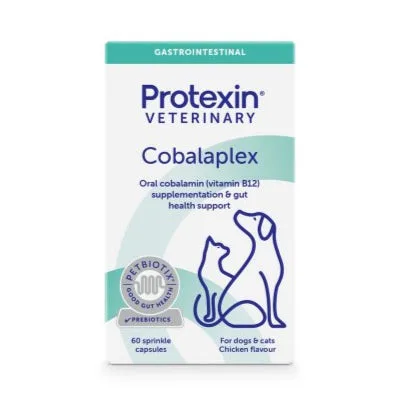

Protexin
Protexin Cobalaplex 維生素 B12
貓狗用 B12＋葉酸膠囊（可灑在食物上）・60 顆膠囊
持平歷史低價比 30 天前便宜 5.6%
90 天價格水準：偏低（最低 €0.31/顆 ～ 最高 €0.33/顆，依過去 15 天每日最低價）
商店報價（依每單位價排序）
| 店家 | 規格 | 總價 | 每單位價 | 條件 | 購買 |
|---|---|---|---|---|---|
| Pharmapets.be | Dômes Pharma/TVM60caps regional package; one-time Achat unique | €18.79 | €0.31/顆 | NL訪客購物車：單盒18.79＋宅配3.99＝22.78；<39收3.99、≥39免 2026-11-27 live browser：60 粒 €18.79，價格不變，有貨，仍為最佳價；訂閱首購 €16.91（-10%，其後每單 -5%），滿 €39 免運。單盒合計 €22.78（未滿 €39 運 €3.99）。 | 前往 → |
| Barfus.lv | 60caps paper packaging; regional identity evidence retained | €23.20 | €0.39/顆 | 運費 €15.00 2026-11-27 live browser：60 粒 €23.20，漲價 €3.48（昨日 €19.72 的 -15% 折扣結束，回到原價 €23.20），有貨；仍高於最佳價 Pharmapets.be €18.79。運費：商品頁未寫；單盒結帳實測 €15.00（11-20）未重跑，單盒合計 €38.20 為按實測運費推算（官網 €9.00 說法與結帳不符，以結帳為準）。返現未核實。 | 前往 → |
| Milo | 60 capsules（Protexin 標籤） | €28.45 | €0.47/顆 | 滿 €49 免運・運費 €3.95 需訂閱定期配送 2026-11-27 live browser：60 粒 €29.95 一次價不變，有貨；定期配送 €28.45（-5%）今日於商品頁再核實。免運 €49（未滿運 €3.95）。 | 前往 → |
| Zoolac | 1x60 capsules Dechra/NL regional label; single purchase | €28.95 | €0.48/顆 | NL滿€75免運，單瓶/兩瓶未滿門檻運費未知；3瓶81.63符合頁面免運規則但未測結帳 2026-11-27 live browser：60 粒 €28.95（原 €32.95），價格不變，有貨；買 2 件 €28.08（-3%）、買 3 件 €27.21（-6%）；荷蘭境內滿 €75 免運（最高 14kg）。 | 前往 → |
| Docvet | 60 capsules（Dechra 標籤） | €28.99 | €0.48/顆 | 滿 €60 免運・運費 €3.95 2026-11-27 live browser：60 粒 €28.99，價格不變，37 op voorraad，有貨；滿 €60 免運。 | 前往 → |
| Soin et Nature | Dômes Pharma TVM France 60caps；GTIN5027314498779 | €19.90 | €0.33/顆 | NL Zone1宅配≤0.5kg€7.99/取貨€6.99；Mondial Relay起€5.99；Delivengo≤100g起€4.99，適用重量/服務待確認；符合條件€129免運 缺貨 2026-11-27 live browser：60 粒 €19.90（含稅；未稅 €16.58），價格不變，缺貨，顯示「Replenishment in progress」且可 Pre-order；滿 €129 免運（BE、LU、DE、NL、ES、IT、AT、IE）。 | 前往 → |
| Diermedicatie.nl | 60 stuks（網址標 Dechra） | €31.00 | €0.52/顆 | 運費 €3.95 沿用 2026-11-11 報價 2026-11-11 重新抓取（頁面meta價）；較上次 11-07：同；運費／促銷欄沿用上次未重核 | 前往 → |
| Petcure | 60 Capsules（頁面編號 570117044-6593＝Dechra 標籤 EAN；製造商 AST Farma） | €31.95 | €0.53/顆 | 未確認 沿用 2026-11-11 報價 2026-11-11 重新抓取（頁面meta價）；較上次 11-07：同；運費／促銷欄沿用上次未重核 | 前往 → |
| Pharmacy4pets | 60 capsules | €33.40 | €0.56/顆 | 滿 €69.95 免運 沿用 2026-11-07 報價 頁面 EAN 5027314499486；27.60＝未稅價 | 前往 → |
| Zoomalia.es | TVM/Dômes2x60 quantity bundle | €38.98 | €0.32/顆 | 運費未知 沿用 2026-11-07 報價 缺貨 僅商品價；庫存/NL官方配送未核，不套西班牙免運 | 前往 → |
| Zoomalia.es | TVM/Dômes60caps one-time | €19.99 | €0.33/顆 | 運費未知 沿用 2026-11-07 報價 缺貨 商品頁已讀單瓶19.99；19.49為買2每瓶（總38.98），不當單瓶價。主頁可見下單model但未明讀InStock不猜。NL評論不等於官方配送政策，運費未知，後raw403停止 | 前往 → |
| DingoVet.bg | Protexin60caps | €20.80 | €0.35/顆 | 配送只列Bulgaria/Speedy；條款提到出口由買家付費，沒有NL明列或運費，不能判已可寄/絕不寄 沿用 2026-11-07 報價 未核實 商品JSONLD20.80EUR InStock；條款仍寫BGN含VAT，頁面和政策年代不一致，NL候選待核，不合成NL總價 | 前往 → |
| BFarma.it | 60caps EAN5027314499486 | €24.45 | €0.41/顆 | 運費未知 沿用 2026-11-07 報價 缺貨 Non disponibile；Europe from€11但NL未明列，不列可買新低 | 前往 → |
| Petreon.ee | Protexin60caps | €24.62 | €0.41/顆 | 運費未知 沿用 2026-11-07 報價 缺貨 商品公開可讀24.62，後續保存遇403即停止該站，未繞。實際商家聯絡地址KaunasLT，不因.ee當Estonia實體。庫存/含稅/NL運費待核 | 前往 → |
| Farmacia33.it | 60caps EAN5027314499486 | €26.90 | €0.45/顆 | 運費未知 沿用 2026-11-07 報價 未核實 26.41為30天最低而非現價26.90；運送頁只列義大利，NL未知 | 前往 → |
| Fitoveta.lt | Protexin60caps | €30.50 | €0.51/顆 | 運費未知 沿用 2026-11-07 報價 未核實 條款含所有稅、運費另加，NL國家未明，不較舊低 | 前往 → |
| HondenKattenApotheek.nl | 60 capsules（Protexin Cobalaplex；標價 €30.50，頁面「Tijdelijk 29,95」） | €30.50 | €0.51/顆 | 未讀 沿用 2026-11-15 報價 未核實 2026-11-15 curl 重抓頁面，確認頁面仍含上次價格字串（未逐變體結構化解析、庫存／運費／促銷沿用 11-13）；價格視為同 11-13；返現率沿用（ShopBuddies zooplus 1.33%/新客8%、Medpets 4%、Brekz 3.5%、YesCashback bestpetfoods 4% 今日重查未變；CashbackXL 頁為 JS 未能讀取＝未確認） | 前往 → |
| Brekz | 60 capsules | €32.39 | €0.54/顆 | 滿 €35 免運 沿用 2026-11-15 報價 未核實 2026-11-15 curl 重抓頁面，確認頁面仍含上次價格字串（未逐變體結構化解析、庫存／運費／促銷沿用 11-13）；價格視為同 11-13；返現率沿用（ShopBuddies zooplus 1.33%/新客8%、Medpets 4%、Brekz 3.5%、YesCashback bestpetfoods 4% 今日重查未變；CashbackXL 頁為 JS 未能讀取＝未確認） | 前往 → |
| Amazon.de | Cobalaplex 60caps | €34.00 | €0.57/顆 | 目的地NL未選；顯示免運不能當NL免運 沿用 2026-11-07 報價 未核實 Amazon履約；搜尋40.10不是本次商品頁34.00 | 前往 → |
| Amazon.de | Protexin60 one-time defaultdestination | €34.00 | €0.57/顆 | 運費未知 沿用 2026-11-07 報價 未核實 內文另一段FeedMyAnimal offer，不能混成同賣家。NL未選、VATcheckout可能變、首購free不能當一般NL免運；非更低 | 前往 → |
| Medpets | 60 capsules | €36.45 | €0.61/顆 | 滿 €69 免運・運費 €4.95・最低訂單 €14.95 需訂閱定期配送 沿用 2026-11-15 報價 未核實 2026-11-15 curl 重抓頁面，確認頁面仍含上次價格字串（未逐變體結構化解析、庫存／運費／促銷沿用 11-13）；價格視為同 11-13；返現率沿用（ShopBuddies zooplus 1.33%/新客8%、Medpets 4%、Brekz 3.5%、YesCashback bestpetfoods 4% 今日重查未變；CashbackXL 頁為 JS 未能讀取＝未確認） | 前往 → |
| Dierapotheker | 60 capsules | €42.95 | €0.72/顆 | 滿 €59 免運・運費 €3.95 沿用 2026-11-15 報價 未核實 2026-11-15 curl 重抓頁面，確認頁面仍含上次價格字串（未逐變體結構化解析、庫存／運費／促銷沿用 11-13）；價格視為同 11-13；返現率沿用（ShopBuddies zooplus 1.33%/新客8%、Medpets 4%、Brekz 3.5%、YesCashback bestpetfoods 4% 今日重查未變；CashbackXL 頁為 JS 未能讀取＝未確認） | 前往 → |
| Amazon.nl | 60 capsules（Dechra 標籤） | €46.37 | €0.77/顆 | 依賣家/Amazon 沿用 2026-11-11 報價 未核實 2026-11-11 重新抓取（頁面meta價）；較上次 11-07：同；運費／促銷欄沿用上次未重核；Amazon 賣家／庫存文字解析不完整，標部分核實，不計入新低 | 前往 → |
| Amazon.it | title60 capsules but metadata80count/Generico conflict | €29.90 | €29.90/盒 | 運費未知 沿用 2026-11-07 報價 未核實 主標60但UnitCount80、brand/manufacturerGenerico，不能拿.37/cap當正確；一次29.90、訂閱28.40分開。NL可送/運費未核 | 前往 → |